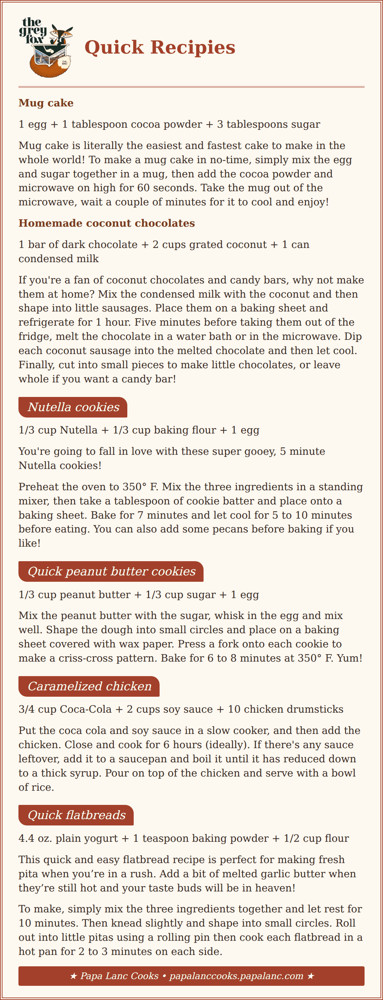

WELCOME
Mug cake
1 egg + 1 tablespoon cocoa powder + 3 tablespoons sugar
Mug cake is literally the easiest and fastest cake to make in the whole world! To make a mug cake in no-time, simply mix the egg and sugar together in a mug, then add the cocoa powder and microwave on high for 60 seconds. Take the mug out of the microwave, wait a couple of minutes for it to cool and enjoy!
Homemade coconut chocolates
1 bar of dark chocolate + 2 cups grated coconut + 1 can condensed milk
If you're a fan of coconut chocolates and candy bars, why not make them at home? Mix the condensed milk with the coconut and then shape into little sausages. Place them on a baking sheet and refrigerate for 1 hour. Five minutes before taking them out of the fridge, melt the chocolate in a water bath or in the microwave. Dip each coconut sausage into the melted chocolate and then let cool. Finally, cut into small pieces to make little chocolates, or leave whole if you want a candy bar!
1/3 cup Nutella + 1/3 cup baking flour + 1 egg
You're going to fall in love with these super gooey, 5 minute Nutella cookies!
Preheat the oven to 350° F. Mix the three ingredients in a standing mixer, then take a tablespoon of cookie batter and place onto a baking sheet. Bake for 7 minutes and let cool for 5 to 10 minutes before eating. You can also add some pecans before baking if you like!
1/3 cup peanut butter + 1/3 cup sugar + 1 egg
Mix the peanut butter with the sugar, whisk in the egg and mix well. Shape the dough into small circles and place on a baking sheet covered with wax paper. Press a fork onto each cookie to make a criss-cross pattern. Bake for 6 to 8 minutes at 350° F. Yum!
3/4 cup Coca-Cola + 2 cups soy sauce + 10 chicken drumsticks
Put the coca cola and soy sauce in a slow cooker, and then add the chicken. Close and cook for 6 hours (ideally). If there's any sauce leftover, add it to a saucepan and boil it until it has reduced down to a thick syrup. Pour on top of the chicken and serve with a bowl of rice.
4.4 oz. plain yogurt + 1 teaspoon baking powder + 1/2 cup flour
This quick and easy flatbread recipe is perfect for making fresh pita when you’re in a rush. Add a bit of melted garlic butter when they’re still hot and your taste buds will be in heaven!
To make, simply mix the three ingredients together and let rest for 10 minutes. Then knead slightly and shape into small circles. Roll out into little pitas using a rolling pin then cook each flatbread in a hot pan for 2 to 3 minutes on each side.

WELCOME
Converted from the original file for viewing — open/download the original to edit it.